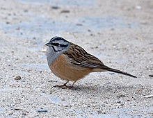
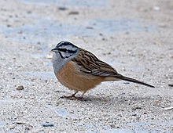

| Rock Bunting | |
|---|---|
|  | |
| Conservation status | |
| Binomial name | |
| Emberiza cia (Linnaeus, 1766) |
| Rock Bunting | |
|---|---|
|  | |
| Conservation status | |
| Binomial name | |
| Emberiza cia (Linnaeus, 1766) |
The Rock Bunting, Emberiza cia, is a passerine bird in the bunting family Emberizidae, a group now separated by most modern authors from the finches, Fringillidae.
It breeds in northwest Africa, southern Europe east to central Asia, and the Himalayas. It is partially migratory, with northern populations wintering further south, mainly within the breeding range of the resident southern populations. It is a rare wanderer to western Europe.
Rock Bunting breeds in open dry rocky mountainous areas. It lays 3-5 greyish eggs in a lined nest on the ground or occasionally in a low bush. Its natural food consists of insects when feeding young, and otherwise seeds.
This bird is 16cm in length. The breeding male has chestnut upperparts, unmarked deep buff underparts, and a pale grey head marked with black striping.
The female Rock Bunting is a washed-out version of the male, with paler underparts, a grey-brown back and a less contrasted head. The juvenile is similar to the female, but with a streaked head.
There are four races differing mainly in the plumage shades, although the subspecies which breeds in Europe, Africa and western Turkey is the only one to show white wing bars.
The call is a sharp tseee, and the song is a twittering churrrr-chirrriiii-itt.

{kind=link}